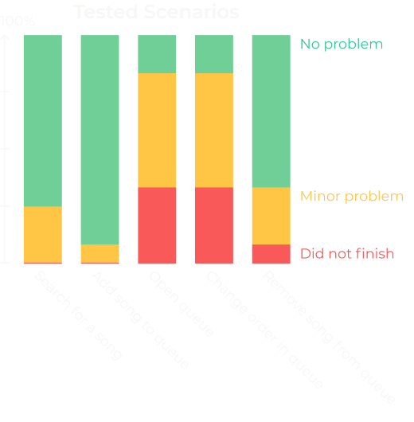

8 week project as a part of the course MMT031 Usability Engineering provided by the faculty of Design & Human Factors at Chalmers University, Gothemburg.
Usability Engineering Project
iOS
November 2018 - December 2018
User Research, Usability Evaluation & UI Design
Julia Molin, Carolina Nordin, Erik Mårtensson & Victoria Sundbom
Justinmind, Adobe Illustrator & Adobe Photoshop
HTA, CW, PHEA, Usability Testing etc.
The Purpose of the project was to dig deep into the different features and functions of Spotifys iOS application in a Usability perspective to make it easier for the users to use regardless of previous app or technology experience.
The goal of the project was to, from user perspective, clarify the interface in Spotify app to increase the understandance of different functions for a more broad audience.
Spotify iOS is a music streaming application built of multiple features and functions to allow streaming of desired music. The search function is used to find tracks, artists, albums etc. The service also allows the user to create and share different playlists. If the user want to avoid choosing song continually, without creating a playlist, it is possible to queue songs. Desired songs are found, added to the queue and played continuosly. The user has the possibility to edit the queue and when the queue is empty Spotify automaticly continues to play similar songs. This feature is popular at parties, different people queue their favorite songs but every now and then there is a person who either conciously or accidently changes the song. This project was executed right before Spotify made a thorough make over of the UI, Spotify release animated album covers and a glimpse of the new UI as the project was going.
Multiple theoretical evaluation methods were used to find possible problems in the scenario of creating and listening to a playlist. Heuristic task analysis was made to map out the different parts of the interaction. A cognitive walkthrough and a predictive error analysis was carried out afterwards to get further into the details of the different sub goals. The results were used as a theoretical basis to to analyze the different errors a user might do in the different steps. The methods gave a concrete picture of the problems of the app and used as a basis for the empirical testing. The same methods were used on the re-design for validation purposes.
The gestalt laws, Jordans 10 principles of usable design and Normans design principles were used as key references and human machine system guidelines in the theoretical evaluation along with Steven Hoobers principles regarding reachability and the thumb zone.
The empirical evuluation started pilot study to confirm some of the results from the theoretical evaluation and provide more data for the design of the usability test. Multiple persons, both experienced and new users, were asked to explain the functions and consequences of different buttons and icons.
The first test testing the usability of the UI, based on problems areas discovered during theoretical evaluation and the pilot study, was carried out in the users everyday environment to mimic the natural experience as much as possible. The selection of of users where mixed in ages, technical skill and previous usage. In the first test were the Spotify iOS app. The test was documented by recording the user from above with both the screen and gestures well visible aswell as audio. In the test the user evaluated the meaning of multiple icons and then carry out multiple predefined scenarios. The predefined scenarios were: search for a song, add a song to the play queue, open the play queue, edit the order in the play queue and remove a song from the play queue.

The evaluation of the icons matched pretty well between the pilot study and the first usability test. Many users had problems understanding what the play queue icon was along with the plus icon that adds songs to your library. Users were also uncertain where the songs was saved by pressing it.
In the tested scenarios a few users had initial trouble searching for a song but everyone managed to do it without help.
Adding the song to the play queue was relatively obvious. All users reached for the “three dot” menu to the right and finds the “Add to play queue” button. This task could, how ever, be done in two ways. Either through the menu or swiping to the right, no user knew about the latter.
Finding the play queue was a struggle for most of the users. Some tried to reach it through the same menu as the previous task. To reach the play queue the users first have ot open the playback UI which half of the users needed assistance with. Four users did not reach the goal at all.
To rearange the song in the play queue the user is required to pull the song by the symbol placed to the far right of each song. The icon is mistaken as a hamburger menu and manu users tries to push it without response. Some selects the song by the cricle to the right and thinks marking it will affect the order. One user accidently started a song from the queue.
Common problems in the last task as in task 4 when the users are asked to remove a song.
The redesign is based on the current playback interface but is inspired by the newly released playback with animated album covers.
The playback UI has some minor changes to increase the usability. The plus icon is moved to the “three dot” menu on the right side, few of the testers knew or understood the purpose of the button and the ones who did rarely used it. In the menu screen the purpose is clarified by copy. In the menu the add to library button will be accompanied by features such as: add to play queue, add to playlist, share, go to radio, show album, show artist report explicit content, creators, etc. The playqueue itself is no longer reached through this menu, it is instead reached from a direct button at bottom left of the screen, next to the “Available units” menu. The buttons will turn green when active as the “Available units” curently does.
The redesigned play queue appears as a modal pop-up from the bottom of the screen when the “Play Queue” button is pressed. The playback is slightly visible in the background. It says “Play Queue” at the top and a clear all button is located at the top right. The currently playing song is colored green nd located at the top of the screen. The following song is next to it, but white. A bin button is placed next to each song the songs can now be removed with one click instead of two. The symbol for drag and drop is changed to one with more visual ques. The UI will show five upcoming songs, the sixth will be barely visible to provide visual ques of the possibility of scrolling. Songs can no longer be started by pressing them to reduce the risk of interupting the current song accidently. To get back to the playback screen the user either tap outside the modal screen or on the arrow in the upper left.
To not refine the home screen UI was a limitation made early in the project but since the user reach the playback UI from this screen some modification were made. The song is still visible in the minified playback screen at the bottom of the screen. Previously it only said “Devices available” but now there is also an icon for the “Play queue” that indicates that whene there is a song in the queue and how many.
A new set of user studies were held to test the redesign against the original app. Half of the testers were new and half were recurring. In that way both reliability and validity can be evaluated.
In the evaluation of the new icons it was the misinterpretation of the “Play queue” that was changed the most, form 45% to 8%. The plus icon is gone in the new interface and the other icons remained the same, and so did the result from thoose.
The redesign of the interface did not affect the first two scenarios and the result from those also remained the same. For the third task, finding the “Play queue”, the result was much better then the first test, some users tried to find it under the “Your library” tab. Changing the order in the “Play queue” turned out better then the first test but many users still had a lot of problem to finish the task. The last task, removing a song, also had a much better result compared to the first test.
The redesign of the “Play queue” resultet in better usability then the original but to improve it even further we investigated the micro interactions of the drag and drop function. In the final test users still tries to press the icon, visual ques as small animations are added to the icon. If the user taps on the name of the song the arrows of the icon will move out and fade back to pull the attention of the user. The item will lifts up slightly from the other items when the icon is tapped, that provides the user the visual cues of it being a drag and dropable element.
{kind=link}